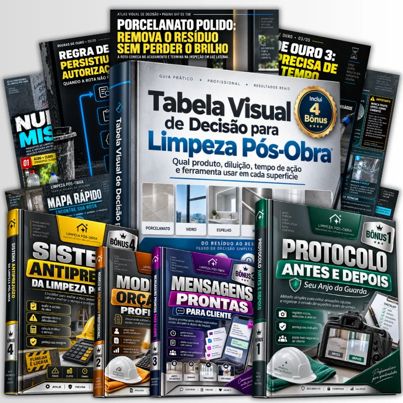
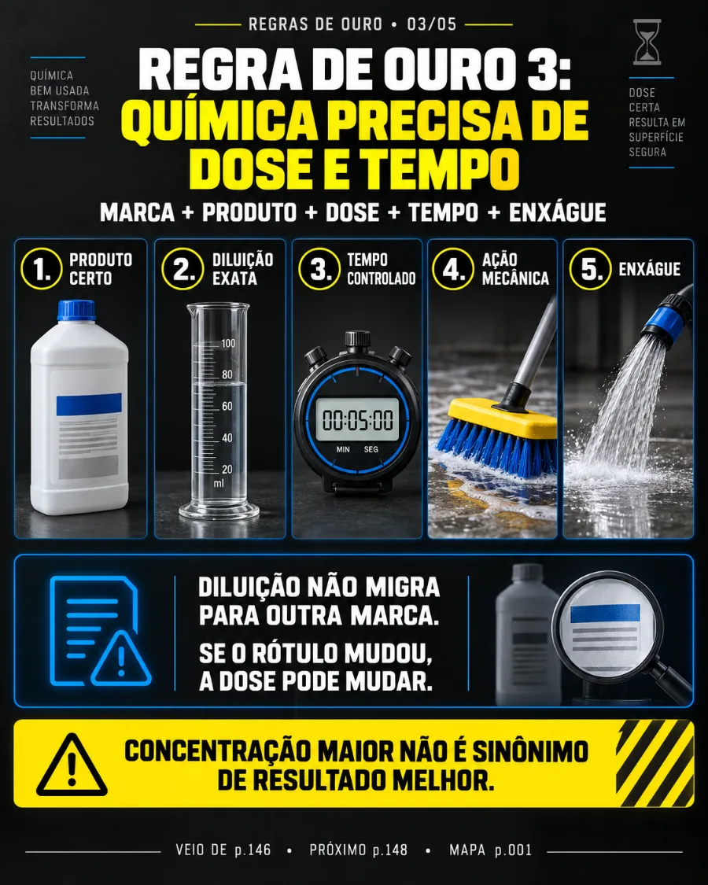
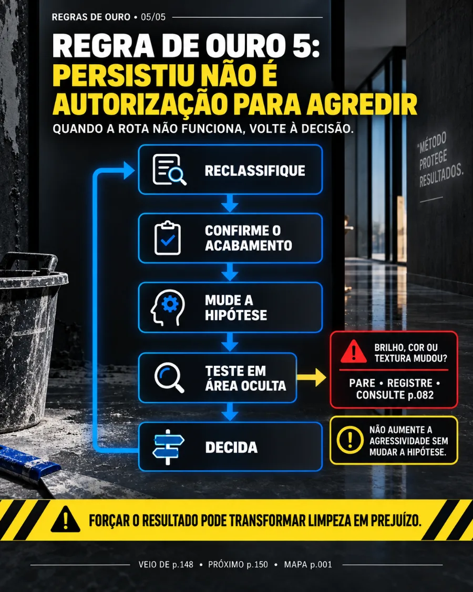
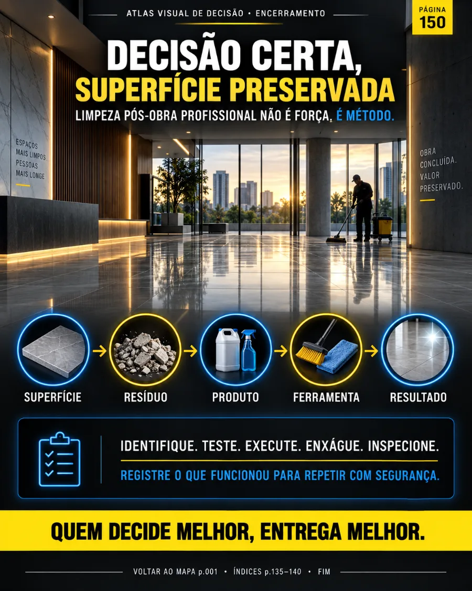
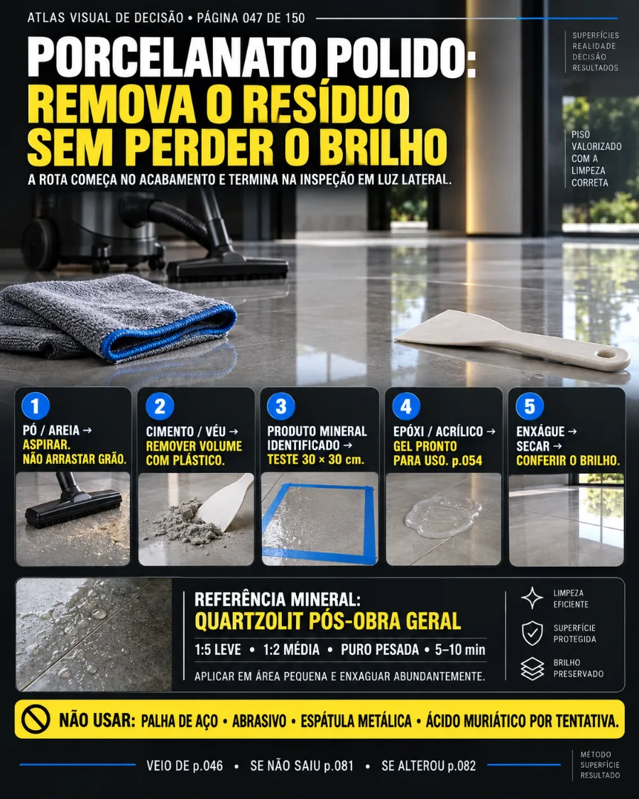
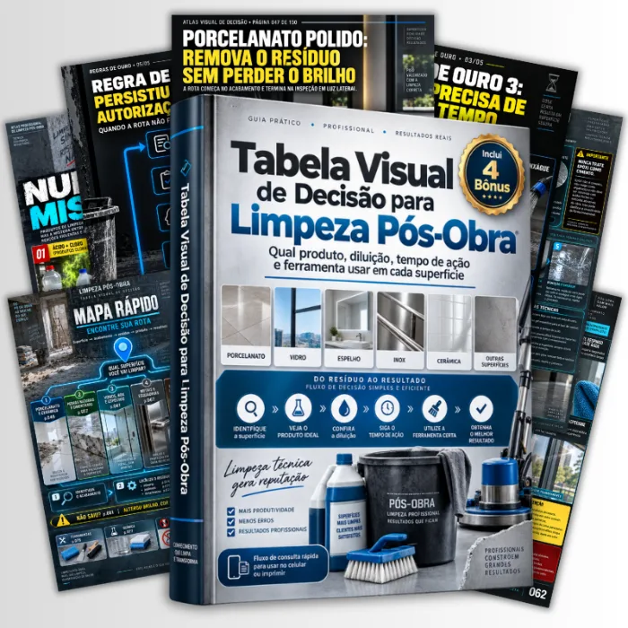
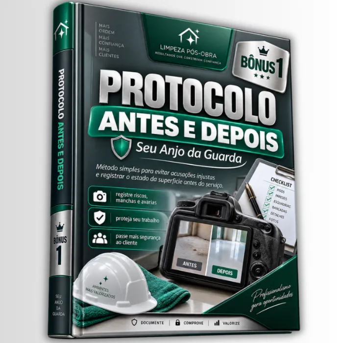

Orientações claras para cada tipo de superfície
Orientações claras para cada tipo de superfície
🔒 Compra 100% Segura e Protegida
+ de 100 MAPAS PRÁTICOS DE DECISÃO PARA ESCOLHER O PRODUTO CERTO SEM ARRANHAR OU MANCHAR ACABAMENTOS
Elimine o risco de usar o produto errado na limpeza pós-obra

Você receberá um conjunto visual de mapas para consultar no celular ou impressas, com passo a passo prático para limpeza pós obra. Consulte a superfície, veja o resíduo e saiba o produto, diluição, ferramenta e cuidado certo para remover cada sujeira, sem depender de palpites ou arriscar prejuízos com acabamentos caros.
- Modelos prontos para porcelanato, vidro, inox e muito mais
- Mostra produto, técnica e ferramenta ideal por situação
- Indica risco e o que evitar em cada etapa
- Consulta rápida direto na obra, no celular ou impresso
- Simplifica o trabalho para quem já faz limpeza pós-obra
📲 Você recebe tudo na hora, direto no seu WhatsApp e e-mail
VEJA OS FLUXOS DE DECISÃO QUE VOCÊ VAI RECEBER JÁ




OS FLUXOS DE DECISÃO POSSUEM:
Orientações claras para cada tipo de superfície Dicas de segurança para evitar danos
Dicas de segurança para evitar danos Instruções de aplicação detalhadas
Instruções de aplicação detalhadas Métodos para identificar e classificar resíduos
Métodos para identificar e classificar resíduos Acesso imediato e fácil
Acesso imediato e fácilQUANTAS VEZES VOCÊ JÁ DANIFICOU UMA SUPERFÍCIE POR NÃO SABER O QUE USAR?
Aproveite a oferta por tempo limitado
15Minutos:00Segundos
QUERO ACESSAR AGORA E USAR HOJEESTA TABELA É IDEAL PARA VOCÊ QUE DESEJA
EVITAR DANOS EM SUPERFÍCIES CARAS
Saber exatamente o que usar para limpar sem riscos de arranhar ou manchar.
AGILIZAR O PROCESSO DE LIMPEZA
Identificar rapidamente a situação e escolher o produto certo.
AUMENTAR A SATISFAÇÃO DO CLIENTE
Entregar resultados profissionais e sem erros na limpeza.
TER CONFIANÇA NO SEU TRABALHO
Chegar preparado para qualquer situação de limpeza pós-obra.
MELHORAR A ORGANIZAÇÃO DO SEU TRABALHO
Ter um guia prático sempre à mão para consulta rápida.
REDUZIR O TEMPO DE PESQUISA
Consultar diretamente o que precisa sem perder tempo.
⚡ ACESSO IMEDIATO
TUDO O QUE VOCÊ VAI RECEBER
TUDO FOI ORGANIZADO PARA SER SIMPLES E FÁCIL DE APLICAR.
Você escolhe o fluxo e já pode começar na mesma hora.
- Fluxo de decisão para porcelanato
- Fluxo de decisão para cerâmica
- Fluxo de decisão para vidro e espelho
- Fluxo de decisão para inox e esquadrias
- Método visual de diagnóstico
- Dicas de segurança e advertências
- Orientações de aplicação detalhadas
- Acesso imediato após a compra
- E muito mais…

E NÃO PARA POR AÍ... TEM MAIS!
VOCÊ TAMBÉM VAI RECEBER…
🎁 4 BÔNUS EXCLUSIVOS

BÔNUS #1Bônus 1 Protocolo antes e depois
Método simples para evitar que o cliente acuse o limpador de um risco que já estava na janela/piso antes do serviço
Valor:Bônus 2 — Modelo de Orçamento Profissional
Documento editável para apresentar seu serviço, escopo, condições e valor de forma profissional.
Valor:Bônus 3 Mensagens prontas
Mensagens de WhatsApp para alinhar expectativas antes, durante e depois da limpeza.
Valor:Bônus 4 Sistema ante prejuízo
Checklist para avaliar o estado da obra, prever dificuldades, calcular melhor o serviço e proteger sua margem.
Valor:ESCOLHA A MELHOR OPÇÃO PARA VOCÊ
PLANO BÁSICO

Você recebe:
- Mapa Visual de Decisão para Limpeza Pós-Obra
- Acesso imediato
- Dicas de segurança
- Método visual de diagnóstico
de R$27,90 por:
ou 4x de R$7,00 no cartão
Você economiza R$10,00QUERO O PLANO BÁSICO⚡ MAIS VENDIDO
PLANO COMPLETO
⚡ 2x MAIS CONTEÚDOS
- Mapa Visual de Decisão para Limpeza Pós-Obra
- Protocolo Antes e Depois
- Modelo de Orçamento Profissional
- Mensagens Prontas para Cliente
- Sistema Anti Prejuízo da Limpeza Pós-Obra
- Acesso imediato
de R$37,90 por:
ou 6x de R$6,50 no cartão
Você economiza R$10,00QUERO O PLANO COMPLETO

GARANTIA DE 15 DIAS — ZERO RISCO PRA VOCÊ
Isso significa que, a qualquer momento, se você achar que o material não faz sentido para sua limpeza, as instruções não atendem sua necessidade ou simplesmente não quiser continuar, você pode solicitar o reembolso. Sem prazo, sem burocracia. O risco fica todo do nosso lado.
COMO É O ACESSO
Siga os passos abaixo para garantir seu material.

Conclua sua compra
Após o pagamento, seu acesso é liberado automaticamente.
- Pagamento rápido e seguro
- Confirmação por e-mail
- Acesso imediato ao material

Entre na área de membros
Acesse todos os seus materiais de forma organizada.
- Navegação simples
- Material sempre acessível
- Atualizações constantes
Baixe os arquivos
Tenha os materiais prontos para uso.
- Acesso offline disponível
- Imprima quando precisar
- Consulte a qualquer momento

Use e aplique
Coloque em prática tudo o que aprendeu.
- Resultados imediatos
- Satisfação garantida
- Aprimore suas técnicas
PERGUNTAS FREQUENTES
Os fluxos são adequados para todos os tipos de superfícies?+
Sim, os fluxos foram desenvolvidos para atender a diversas superfícies como porcelanato, vidro, inox e cerâmica.
O acesso é imediato após a compra?+
Sim, você terá acesso imediato ao material após a confirmação do pagamento.
Posso imprimir a tabela visual?+
Sim, a tabela pode ser impressa para facilitar o uso durante a limpeza.
E se eu não gostar do material?+
Você tem 15 dias para solicitar o reembolso, sem burocracia.
Preciso de experiência para usar os fluxos?+
Não, os fluxos são práticos e fáceis de seguir, ideal para todos os níveis.
Os bônus são incluídos no plano básico?+
Não, os bônus estão disponíveis apenas no plano completo.